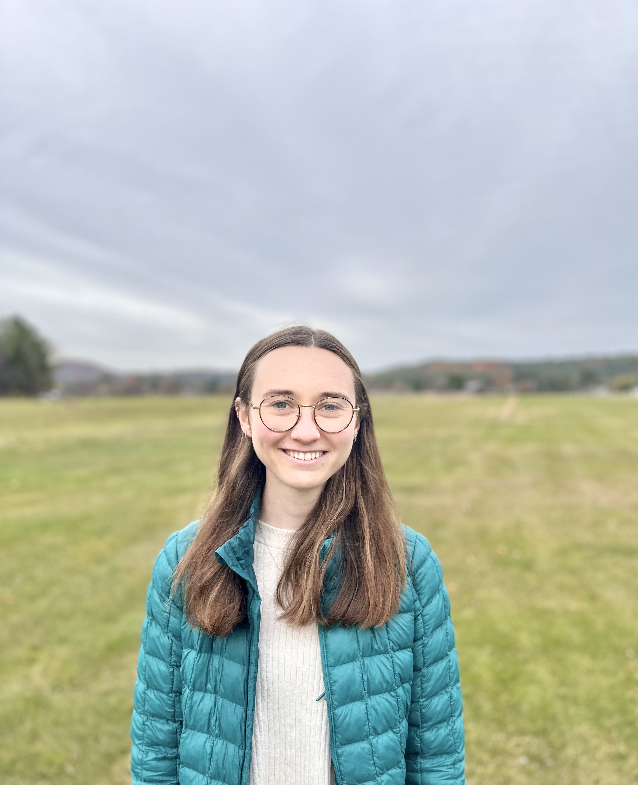

I am a PhD student in the Department of Psychology at Yale University. I primarily work with Dr. Nick Turk-Browne and Dr. BJ Casey. I also work with the Krishnaswamy Lab in the Department of Computer Science and Department of Genetics at Yale. My work lies at the intersection of human learning and machine learning. I am interested in the computational principles of human brain activity that enable and constrain learning new skills, and manipulating those to facillitate more efficient learning. I also enjoy developing and applying novel analysis techniques to explore individual differences questions with fMRI data. I completed my undergraduate degree in Cognitive Science, Computer Science, and Spanish at Dartmouth College in winter of 2020, where I worked with Dr. Jim Haxby and Dr. Caroline Robertson.
Research
Publications & Preprints
Busch, E.L., Rapuano, K.M., Anderson, K.M., Rosenberg, M.D., Watts, R., Casey, BJ, Haxby, J.V., & Feilong, M. (Under review). The LEGO theory of the developing functional connectome. bioRxiv
Busch, E.L., Huang, J., Benz, A., Wallenstein, T., Lajoie, G., Wolf, G., Krishnaswamy, S.*, & Turk-Browne, N.B.* (Submitted). Temporal PHATE: A multi-view manifold learning method for brain state trajectories. bioRxiv
Huang, J.*, Busch, E.L.*,Wallenstein, T.*, Gerasimiuk, M., Benz, A., Lajoie, G., Wolf, G., Turk-Browne, N.B., Krishnaswamy, S. (Under review).Learning shared neural manifolds from multi-subject FMRI data. arXiv
Busch, E.L.*,, Slipski, L.*, Feilong, M., Guntupalli, J.S., Visconti di Oleggio Castello, M., Huckins, J.F., Nastase, S.A., Gobbini, M.I.,Wager, T.D., Haxby, J.V. (2021). Hybrid hyperalignment: A single high-dimensional model of shared information embedded in cortical patterns of response and functional connectivity. NeuroImage, 233, 117975. Paper Code
Posters & Presentations (2021-Present)
Posters
Busch, E.L., Huang, J., Lajoie, G., Wolf, G., Krishnaswamy, S., & Turk-Browne, N.B. (2022). A neural manifold learning framework for real-time fMRI neurofeedback. Real-time Functional Imaging and Neurofeedback Meeting.
Busch, E.L., Rapuano, K.M., Anderson, K.M., Rosenberg, M.D., Watts, R., Casey, BJ, Haxby, J.V., & Feilong, M. (2022). Heritable template underlies reliable idiosyncrasies in the developing fine-scale connectome. Organization for Human Brain Mapping Annual Meeting.
Letrou, A., Busch, E.L., & Turk-Browne, N.B., (2022). Relating neural dynamics and meotion dynamics with nonlinear manifold learning. Poster at the Social and Affective Neurosience Society Annual Meeting.
Busch, E.L., Huang, J., Benz, A., Wallenstein, T., Lajoie, G., Wolf, G., Krishnaswamy, S., & Turk-Browne, N.B. (2021). Manifold learning to capture brain-state trajectories in fMRI. Society for Neuroscience Annual Meeting.
Walton, A.E., Nizzi, M.C., West, B., Mofe, E., Roth, R.M., Busch, E.L., Holtzheimer, P.E., Roskies A.L. (2021). The impact of anxiety and depression on dimensions of agency. Seventh Annual NIH BRAIN Initiative Annual Meeting.
Sivitilli, D.M., Weertman, W.L., Busch, E.L., Ullmann, J.F., Smith, J.R., Gire, D.H. (2021). Strategies of single arm foraging in Octopus rubescens in the absence of visual feedback. Society for Integrative and Comparative Biology.
Select talks
The LEGO theory of the developing functional connectome. (April 2022) Current works in Behavior, Genetics, and Neuroscience, Yale University.
Modern fMRI analysis techniques. Guest Lecture, Yale NSCI 270 November 2021.
Hyperalignment: Foundations, flavors, and functions. (April 2021) FINN Lab Meeting, Dartmouth College.